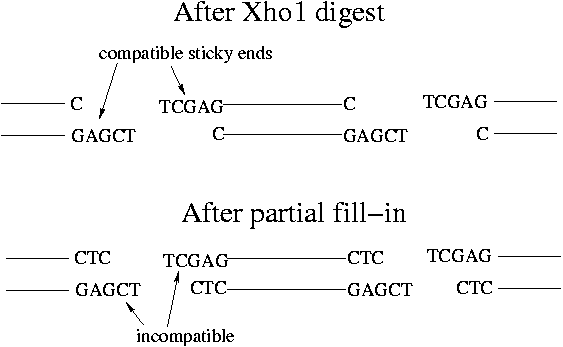

Day 9 Afternoon Lecture Notes
Steve Williams, Smith College
June 14, 2004
At the beginning of experiment 1, we cleaved mouse DNA with EcoR1 and cloned the fragments into Lambda Zap Express. The gel showed that some fragments were > 12 kbp in length. 12 kbp is the largest segment that can be cloned into Lambda Zap Express. The longest fragments in the EcoR1 digest will therefore not be included in the Lambda Zap Express library.
If it's desirable for the entire genome to be reproduced in a library, it needs to be cut completely and randomly into small segments. We would like the average fragment size to be about 9 kbp. Shearing through a syringe tip would cut randomly but give pieces that are too small. With random shearing there will still be large fragments but large enough coverage guarantees that any given gene should be represented. Some parts of the genome have no restriction sites so even cutting with multiple enzymes wouldn't guarantee a complete library.
A randomly cut library has overlapping fragments that allow reassembly. Restriction digests don't allow reassembly because they have no overlaps. "Tiling" of the sequence refers to having enough overlaps to span the whole genome. Often 7x or 8x tiling is performed.
Many good papers on the topic of preparing a genomic library are available from TIGR, Stanford Human Genome Center and Wash. U. in St. Louis.
Suitability of Various Lambda Phage Vectors for Cloning a Complete Genomic Library
| Method | Ave. Size (kbp) | # diff. frag. | # frag. for 7x coverage | How many plates | Max insert size (kbp) |
| Lambda Zap Express/EcoR1 | 3 | 106 | 7x106 | 140 | 12 |
| Lambda Zap Express/random | 9 | ? | 2.3x106 | 47 | 12 |
| Lambda Fix II/random | 18 | ? | 1.7x106 | 23-24 | 22 |
| Cosmid | 36 | ? | 8x105 | 12 | 44 |
| Bacterial artificial chromosome (BAC) | 108 | ? | 2.5x105 | 4 | 120? |
The numbers in the table assume that the genome in question is mouse with 3x109 bp. The number of plates assumes 5x104 plaques/plate. Note that Lambda Zap Express is an "insertion vector" and is a Stratagene product. Lambda Fix II is a "replacement vector" where a helper phage displaces some lambda DNA and replaces it with the insert.
Clearly the longer the insert can be, the more manageable the plate screening will be. For BACs, the largest possible insert size isn't well-defined. Four plates would mean two hybridization bags with two filters each in them.
Soon complete genomic libraries of the most studied organisms will be available commercially. In the future clones of individual genes of the common organisms will be listed in catalogs.
The wild-type lambda genome has regions for head and tail proteins, immunity, DNA synthesis and lysis of the host. In the center of the chromosome is the "b2 region" that contains genes of unknown function and the integration/recombination genes, all of which can be removed. Integration/recombination means that lambda DNA is put into E. coli chromosome and is only reproduced during replication. Instead we want lambda to circularize its DNA and immediately begin its own reproduction. Integrated lambda is dormant. In molecular biology wild-type lambda is used only for making markers.
"Replacement vectors" have a "stuffer fragment" in the center that is discarded after digestion. Without the stuffer, left and right arms ligated together are too small to package into lambda, whose genome must be >= 38 kbp. For successful Lambda Fix II replication, any insert must satisfy 10 kbp <= length <= 22 kbp. Once the stuffer is removed, all replicating phage are recombinants, so blue-clear selection isn't needed. Inserts <= 10 kbp won't even replicate.
A "partial fill-in" method can be used to prevent rehybridization of the stuffer with the two arms. For Lambda Fix II, cutting with Xho1 leaves TCGAG overhangs. Adding dTTP and dCTP with DNA polymerase results in TC overhangs. As a result the arms and the stuffer cannot rehybridize.

In order to complete the ligation, put AG overhangs on the insert. AG overhangs are made by BAMH1, Mbo1 etc. Alternatively, do random shearing of the insert DNA, blunt the ends and add adaptors as in experiment 4.
Up Previous Next